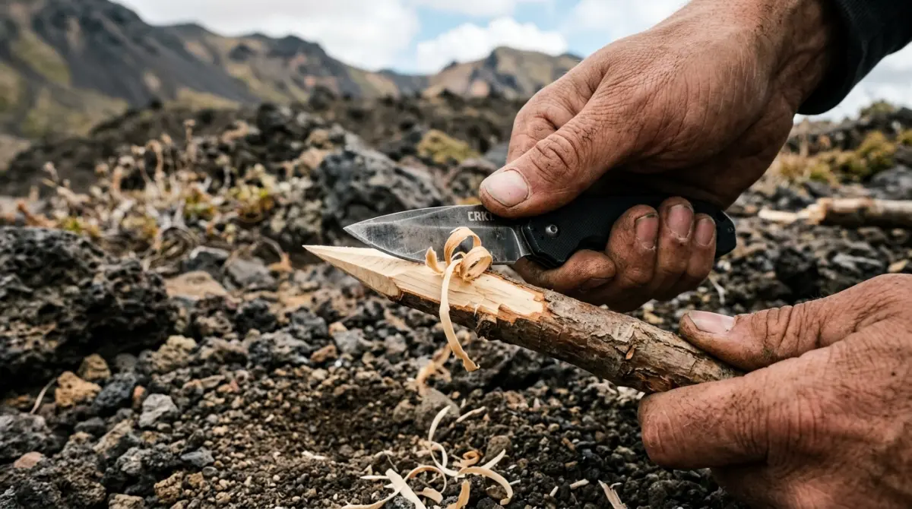
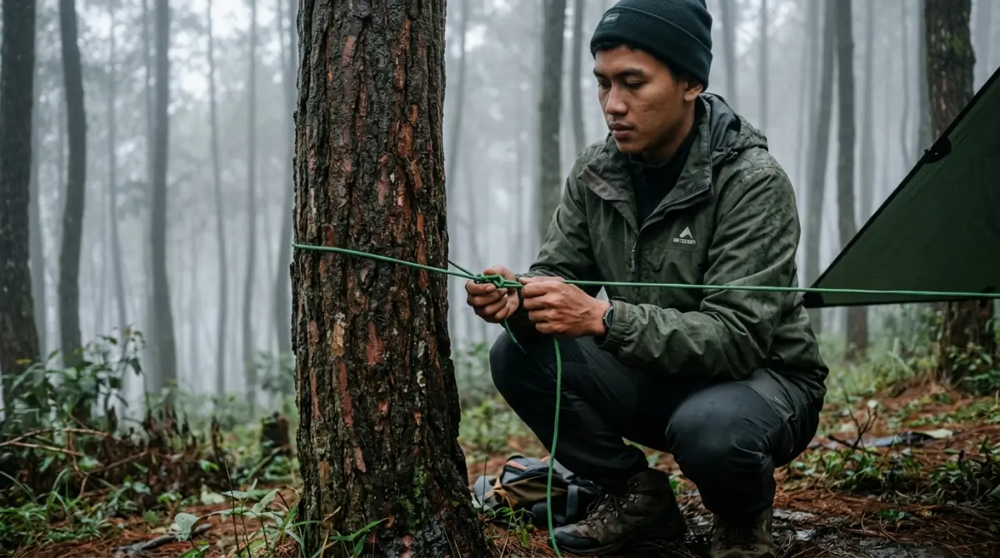

Mengetahui cara membuat bivak darurat adalah skill wajib yang bisa menyelamatkan nyawa di alam bebas.Pernah nggak sih kamu mengalami momen horor di kantor saat server down atau file presentasi hilang tepat lima menit sebelum meeting dengan klien penting? Paniknya pasti bikin keringat dingin. Nah, bayangkan level kepanikan itu terjadi saat kamu sedang asyik memimpin rombongan outbound atau berkemah di alam bebas, lalu tiba-tiba tenda utamamu robek tertiup angin kencang atau parahnya, rangkanya patah.
Kalau kamu nggak punya backup plan alias kemampuan survival dasar, liburan yang harusnya jadi ajang healing bakal berubah menjadi penyesalan seumur hidup karena peserta kedinginan semalaman. Jangan sampai kamu menyesal karena menyepelekan skill dasar ini hanya karena merasa alat modern sudah cukup.
Lewat panduan ini, aku akan membagikan teknik bertahan hidup yang wajib kamu kuasai berdasarkan pengalaman di lapangan, yaitu cara membuat tenda sendiri (bivak) darurat bermodalkan jas hujan ponco atau terpal. Yuk, pelajari sekarang sebelum momen darurat itu benar-benar datang mengujimu!
Mengapa Skill Bivak Itu Ibarat Punya Dana Darurat?
Dalam dunia kerja, kita diajarkan untuk selalu punya contingency plan atau rencana cadangan. Kalau proyek A gagal, kita langsung eksekusi rencana B. Begitu juga saat beraktivitas di alam bebas, entah itu di dataran tinggi yang cuacanya se-labil mood bos di akhir bulan, atau di hutan pinus yang rawan angin puting beliung kecil.
Tenda dome modern memang praktis, tapi mereka tidak kebal dari kerusakan mekanis seperti frame berbahan fiber yang pecah terinjak, atau flysheet yang sobek terkena ranting tajam.
Bivak adalah istilah pendakian untuk tempat berlindung sementara di alam bebas. Mengetahui cara membuat tenda sendiri dari alat seadanya ini fungsinya persis seperti dana darurat finansial; kamu mungkin tidak ingin menggunakannya, tapi saat krisis melanda, ia adalah satu-satunya hal yang menyelamatkanmu dari "kebangkrutan" (dalam hal ini, hipotermia).
Sebagai seseorang yang kerap mengorganisir kegiatan kemah dan outbound, aku selalu mewajibkan timku untuk membawa jas hujan ponco (jas hujan kelelawar) dan tali paracord ekstra. Dua barang sepele ini adalah kunci keselamatan utama.
Persiapan Sebelum Eksekusi: Membaca Situasi Alam
Membangun tenda darurat tidak bisa asal mendirikan tiang. Sama seperti melakukan riset pasar sebelum meluncurkan produk baru, kamu harus membaca situasi alam agar bivak yang kamu buat tidak roboh dalam hitungan menit.
Analisis Arah Angin (Jangan Melawan Arus)
Kesalahan terbesar pemula saat keadaan darurat adalah panik dan langsung membentangkan terpal di mana saja. Padahal, angin gunung bisa sangat destruktif. Caranya mudah: ambil sedikit debu kering atau serpihan daun, lalu jatuhkan. Lihat ke arah mana material tersebut terbang. Kamu juga bisa merasakan hembusan angin di wajahmu.
Setelah mengetahui arahnya, bangunlah bagian punggung atau bagian tertutup bivak menghadap ke arah datangnya angin (windward). Jangan sampai bagian yang terbuka justru menghadap angin, karena terpalmu akan berubah fungsi menjadi parasut dan terbang membawa semua barangmu.
Pemilihan Lokasi: Grounding yang Tepat
Mencari lahan untuk bivak itu seperti mencari lokasi strategis untuk membuka kantor cabang; harus aman dari risiko bencana. Hindari mendirikan tenda darurat di jalur air atau cekungan tanah. Meskipun saat itu tanah terlihat kering, ketika hujan turun, cekungan itu akan langsung berubah menjadi kolam dadakan.
Carilah permukaan yang relatif datar dan permukaannya tertutup dedaunan kering yang tebal (ini berfungsi sebagai insulasi alami dari dinginnya tanah). Selain itu, selalu lihat ke atas. Jangan pernah mendirikan perlindungan di bawah pohon mati atau ranting rapuh yang berpotensi patah dan menimpamu.
Peralatan Tempur: Memaksimalkan Apa yang Ada di Tas
Untuk mempraktikkan cara membuat tenda sendiri, kamu tidak butuh tas ransel sebesar kulkas dua pintu. Cukup manfaatkan barang-barang survival dasar yang idealnya selalu ada di dalam tas daypack-mu:
- Jas Hujan Ponco atau Terpal (Flysheet) Ukuran 3x3: Ini adalah atap utamamu. Ponco sangat ideal karena lubang lehernya bisa diikat rapat, dan biasanya sudah memiliki lubang cincin (eyelet) di keempat sudutnya.
- Tali Paracord atau Tali Pramuka: Bawa minimal 10-15 meter. Tali paracord sangat direkomendasikan karena inti seratnya sangat kuat menahan beban dan tarikan angin.
- Pisau Lipat atau Golok Tebas: Untuk memotong tali dan meraut ranting kayu.
- Ranting Pohon: Alam sudah menyediakan tiang dan pasak gratis. Kamu hanya perlu kejelian untuk memilihnya.

Menguasai teknik simpul tali adalah kunci agar bivak darurat kokoh dan tidak roboh saat angin kencang.Langkah Praktis Cara Membuat Tenda Sendiri (Bivak A-Frame)
Ada banyak model bivak, tapi model A-Frame (bentuk segitiga klasik) adalah yang paling mudah, cepat dibangun, dan memiliki sirkulasi udara serta ketahanan air hujan yang paling baik.
1. Menentukan Tiang Utama dari Alam
Langkah pertama adalah mencari dua pohon penyangga yang jaraknya sekitar 2 hingga 3 meter. Pohon ini ibarat manajer proyek yang solid; batangnya harus kokoh dan tidak goyah saat didorong. Jika kamu berada di area sabana yang minim pohon besar, kamu harus mencari dua batang kayu atau ranting pohon berbentuk "Y" setinggi perut orang dewasa. Tancapkan kedua kayu "Y" tersebut ke tanah dengan kuat. Ujung bercabang ini nantinya akan menopang kayu melintang atau tali utama.
2. Membentangkan Tali Utama (Ridge Line)
Ikat tali paracord secara horizontal menyambungkan kedua pohon tadi, posisikan sekitar setinggi pinggang atau perut (tergantung lebar ponco/terpal yang kamu bawa). Tali ini disebut ridge line. Pastikan talinya ditarik sekencang mungkin, setegang urat leher bos saat meeting evaluasi mingguan. Kalau tali ini kendor, atap tendamu akan melengkung ke bawah, mengumpulkan air hujan, dan akhirnya ambruk karena beban air.
3. Memasang Mantel atau Terpal
Ambil jas hujan ponco atau terpalmu. Jika menggunakan ponco, ikat dulu bagian hoodie (penutup kepala) dengan karet atau tali kecil sampai benar-benar rapat agar air tidak bocor dari tengah. Letakkan bagian tengah ponco/terpal tepat di atas ridge line yang sudah membentang tadi, sehingga sisinya menjuntai ke kanan dan ke kiri secara simetris membentuk huruf 'A'.
4. Mengunci Sudut dengan Pasak Ranting
Ini adalah tahap finishing. Tarik keempat sudut terpal yang menjuntai menyentuh tanah ke arah luar agar kain menjadi tegang. Jangan biarkan ada bagian yang berkerut. Kain yang tegang akan membuat air hujan langsung mengalir deras ke tanah tanpa sempat merembes.
Untuk pasak, cari ranting pohon seukuran ibu jari dengan panjang sekitar 20 cm, raut sedikit ujungnya agar runcing. Ikat sudut terpal dengan tali pendek, lalu kaitkan ke pasak ranting, dan tancapkan ke tanah dengan sudut kemiringan 45 derajat berlawanan arah dari tarikan tenda.
Tiga Simpul Tali Wajib untuk Keamanan Ekstra
Mengikat tali bivak nggak bisa sembarangan pakai simpul mati alias ikat sepatu biasa. Tarikan angin gunung itu sangat kuat. Berikut tiga simpul andalan yang wajib kamu hafal di luar kepala:
- Simpul Pangkal (Clove Hitch): Simpul ini digunakan untuk mengikat ujung tali pada batang pohon sebagai permulaan ridge line. Semakin kencang tali ditarik, ikatan ini justru akan semakin mencengkeram batang pohon dengan kuat.
- Simpul Tarik (Taut-line Hitch): Simpul ini digunakan untuk mengikat tali sudut tenda ke pasak. Keistimewaannya, kamu bisa menggeser simpul ini ke atas atau ke bawah untuk mengencangkan atau mengendurkan terpal tanpa harus melepas ikatan dari pasak. Sangat praktis kalau terpal tiba-tiba kendor karena basah terguyur hujan.
- Simpul Kambing (Bowline): Simpul mati yang tidak akan menjerat. Sangat berguna untuk mengikat ujung terpal yang tidak memiliki eyelet (lubang cincin). Cukup masukkan batu kecil ke ujung terpal, bungkus kainnya, lalu ikat dengan simpul bowline agar tali tidak merosot.
Menjaga Kondisi Psikologis Tetap Stabil
Satu hal yang jarang dibahas dalam panduan teknis adalah faktor psikologis. Saat tenda rusak di tengah malam yang dingin, kepanikan adalah musuh terbesarmu, bukan suhu udara. Sebagai pemimpin rombongan atau kepala keluarga, kamu harus tetap tenang.
Tarik napas panjang, kumpulkan tim, dan berikan instruksi yang jelas layaknya sedang membagi task pekerjaan di Trello. Tugaskan satu orang mengumpulkan ranting, satu orang mencari pasak, dan kamu fokus merangkai ridge line. Kerja sama tim yang ritmis akan membuat proses cara membuat tenda sendiri ini selesai dalam waktu kurang dari 15 menit. Percayalah, menyibukkan diri secara terstruktur adalah obat paling ampuh untuk mengusir rasa takut dan dingin.
Kesimpulan: Bekal Tak Terlihat yang Menyelamatkan Nyawa
Pada akhirnya, alam bebas tidak pernah berjanji untuk selalu ramah. Secanggih apapun perlengkapan outdoor yang kamu beli dengan harga jutaan rupiah, selalu ada celah untuk terjadinya force majeure atau kondisi tak terduga. Pengetahuan dan keterampilan bertahan hidup adalah aset intelektual yang tidak akan pernah bisa dicuri, basah, atau rusak.
Sepuluh tahun dari sekarang, saat kamu duduk santai mengingat masa muda, cerita tentang bagaimana kamu berhasil melindungi teman-temanmu dari badai dengan sebuah jas hujan dan tali paracord akan menjadi memori epik yang membanggakan. Jangan tunggu sampai bencana kecil di gunung terjadi.
Cobalah praktikkan teknik ini akhir pekan nanti di halaman belakang rumah atau saat kamu sedang santai di area campground. Waktumu untuk belajar adalah sekarang, karena di saat darurat, kamu tidak punya kemewahan waktu untuk mencari sinyal internet dan googling tutorial. Stay safe, asah skill-mu, dan jadilah petualang yang bertanggung jawab!
FAQ